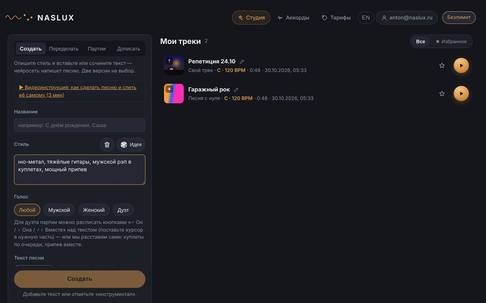
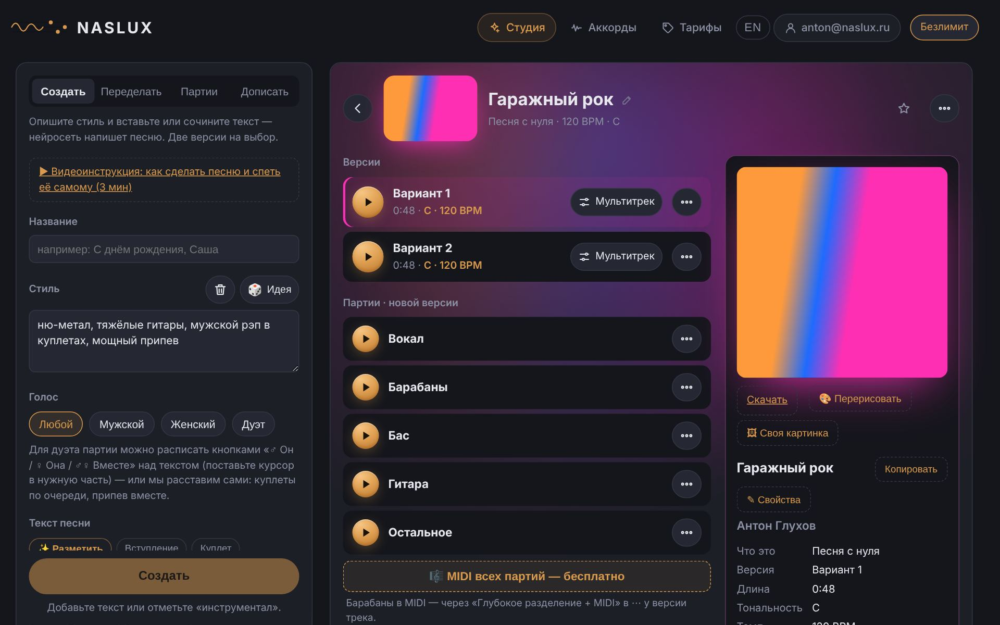
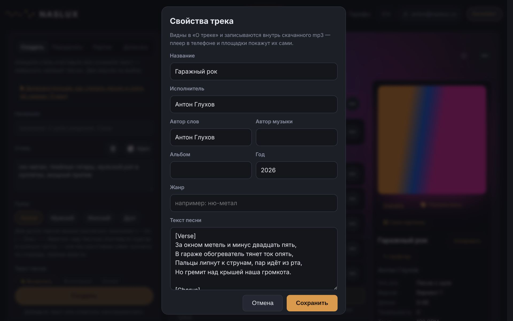
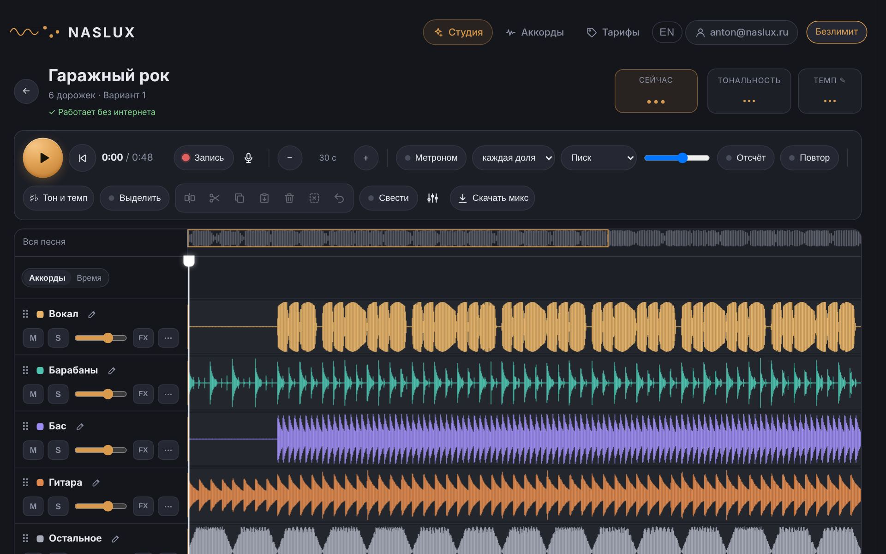

Песни нейросетью, каверы своих записей, партии, мультитрек, аккорды и табы —
всё, что умеет NASLUX, шаг за шагом.
Версия {{version}} · {{date}} · naslux.ru
СодержаниеЧто внутри
Быстрый старт
Студия: песня с нуля
Переделать: кавер своей записи
Партии: разложить трек
Страница трека
Мультитрек
Аккорды, табы и MIDI
Цены и кредиты
Права: что можно и нельзя
Вопросы и помощь
Что нового в версии {{version}}
1Быстрый старт
Откройте naslux.ru и нажмите «Вход»: почта, Яндекс ID или VK ID. За регистрацию — {{welcome}} кредитов
({{welcomeWhat}} на пробу).
Перейдите в Студию. Слева — форма: «Создать», «Переделать», «Партии», «Дописать». Справа — «Мои треки».
Опишите стиль, вставьте текст и нажмите «Создать». Через минуту-две появятся две версии на выбор с обложкой.
Нажмите на трек — откроется его страница: версии, обложка, текст, свойства, партии и мультитрек.

Студия: слева — что сделать, справа — ваши треки.
Совет. Всё, что вы заполнили, сохраняется само. Закрыли вкладку или не хватило кредитов —
вернётесь, и форма на месте.
2Студия: песня с нуля
Вкладка «Создать». Нейросеть пишет песню целиком: музыка, аранжировка и вокал по вашему тексту.
Стоит {{createCredits}} кредитов (≈ {{createRub}} ₽) за две версии.
Поля формы
Название — как будет называться трек в «Моих треках».
Стиль — жанр, настроение, инструменты, темп, голос. Чем точнее, тем ближе результат:
«ню-метал, тяжёлые гитары, мужской рэп в куплетах, мощный припев». Кнопка «Идея» подскажет стиль,
«Дописать с ИИ» — разовьёт ваш набросок.
Голос — любой, мужской, женский или дуэт. В дуэте части расписываются кнопками «♂ Он / ♀ Она / Вместе»
над текстом, иначе куплеты пойдут по очереди, а припев — вместе.
Текст песни — до 5000 знаков. Кнопки над полем ставят метки частей: вступление, куплет, припев, бридж,
соло. Нет текста — «Сочинить» напишет его по теме; инструментал — отметьте «инструментал».
Без чего — чего в песне быть не должно: «без автотюна, без электроники».
Смелый режим — нейросеть смелее экспериментирует со звуком и формой.
Совет. Метки частей по-русски («[Куплет]», «[Припев]») понятны нейросети —
переводить их не нужно. Короткие строки поются чётче длинных.
Мой голос
Загрузите 20–60 секунд своего пения — нейросеть запомнит тембр и будет петь им ваши песни. Только свой голос
или с согласия его владельца.
3Переделать: кавер своей записи
Вкладка «Переделать». Загрузите свою песню (хоть запись на телефон под гитару) и выберите стиль —
мелодия и текст сохранятся, а инструменты и жанр сменятся. Стоит {{coverCredits}} кредитов.
Сила исходника — насколько держаться оригинала: больше — ближе к вашей мелодии, меньше — свободнее.
Текст — вставьте слова, нейросеть споёт их на новую аранжировку.
Продолжить мою запись — не переделывать, а дописать дальше: припев, следующий куплет — в том же темпе
и звуке. Получится одна песня: ваша запись и продолжение ({{continueCredits}} кредитов).
Важно. Своё — переделываем лучшей нейросетью. Чужие песни можно переделать для себя,
но делиться такими каверами нельзя — это права их авторов.
4Партии: разложить трек
Вкладка «Партии» или «⋯ → Разделить на партии» у любой версии. Трек раскладывается на вокал, гитару, бас,
барабаны и остальное ({{stemsCredits}} кредита). Для песен, сделанных в Студии, есть
12 дорожек студийного качества ({{stems12Credits}} кредитов): бэк-вокал, клавиши, струнные, перкуссия…
и «Минус и голос» — быстро отделить голос от музыки.
MIDI всех партий — одна кнопка под партиями: каждая дорожка, кроме барабанов, переведётся в ноты,
все MIDI скачаются одним архивом. Бесплатно.
Барабаны в MIDI — «Глубокое разделение + MIDI» в «⋯» у версии трека.
Дописать партию
Вкладка «Дописать»: нейросеть добавит к треку недостающую партию — бас, барабаны, клавиши.
5Страница трека
Нажмите на трек в «Моих треках». Страница подстраивается под цвет обложки.

Версии слева, «О треке» справа: обложка, свойства, стиль и текст.
Версии и меню «⋯»
▶ — слушать; полноэкранный плеер с текстом и суфлёром (слова подсвечиваются в такт).
Мультитрек — открыть версию с дорожками (глава 6).
⋯ — скачать mp3 (со свойствами и обложкой внутри файла), WAV для релиза ({{wavCredits}} кредитов),
продлить песню ({{extendCredits}}), темп и тональность (бесплатно), кавер на этот трек, табы и MIDI,
поделиться ссылкой «послушать без входа», передать музыканту со всеми дорожками.
О треке
Обложка: «Скачать», «🎨 Перерисовать» (новая по смыслу песни, до трёх раз) или «🖼 Своя картинка» —
любое фото, обрежем квадратом сами.
✎ Свойства: название, исполнитель, авторы слов и музыки, альбом, год, жанр, текст. Всё это
записывается внутрь скачанного mp3 — телефон, плеер в машине и площадки покажут сами.
Распознать текст с записи — если у трека нет слов (например, вы загрузили свою песню). Бесплатно,
2–5 минут; слова появятся в «О треке» и в суфлёре.
Копировать / В форму — забрать стиль или текст в новую песню.

Свойства трека.
6Мультитрек
Все партии вместе, как в студии: громкость, «заглушить» (M), «соло» (S), эффекты (FX), метроном по долям песни,
запись голоса и сведение. Входит в подписку «Студия».

Мультитрек: сверху — управление, ниже — дорожки.
Метроном — щёлкает по настоящим долям песни; выберите частоту, звук, громкость и такт отсчёта.
Повтор — выделите кусок на линейке и учите его по кругу.
Тон и темп — сдвинуть тональность и темп всех дорожек под свой голос.
Выделить — режим выделения: протяните по дорожке; дальше резать ✂, копировать,
вставлять, удалять, отменять. Куски перетаскиваются мышью (на телефоне — удержите палец).
Добавить дорожку — внизу: пустая дорожка, «Загрузить файлы…» (можно сразу несколько — каждый на свою
дорожку) или перетащить кусок с другой.
ЗаписьR — пойте под трек с курсора, в наушниках. После записи: убрать шум,
подтянуть ноты мягко или «автотюном», вернуть как было.
Свести — влить голос в микс: уровни, обработка, общее пространство.
Скачать микс — то, что сейчас звучит, одним файлом; или сохранить микс отдельным треком в Студии.
Совет. Масштаб — Ctrl + колесо мыши, прокрутка —
Shift + колесо. Мультитрек работает и без интернета, когда трек уже загрузился.
7Аккорды, табы и MIDI
Раздел «Аккорды»: загрузите любую песню — получите аккорды бегущей лентой, тональность и темп.
Это бесплатно, до {{chordsPerDay}} песен в день.
Аппликатуры — как ставить каждый аккорд, под ваш строй.
Полный разбор — партии, табы (Guitar Pro и текстом), MIDI и текст песни. {{freeSongs}} разбора бесплатно,
дальше — «Один трек» за {{priceSingle}} ₽ или без лимита в подписке.
Метроном и замедление — по найденным долям, а не по среднему темпу.
Для трека из Студии то же самое — «⋯ → Табы, аккорды и MIDI».
8Цены и кредиты
Всё в Студии оплачивается кредитами: 1 кредит ≈ {{creditRub}} ₽. Цена действия написана прямо на кнопке.
Кредиты не сгорают, а если генерация не удалась — возвращаются сами.
Вариант
Цена
Что входит
Бесплатно
0 ₽
Аккорды до {{chordsPerDay}} в день, {{freeSongs}} полных разбора,
{{welcome}} кредитов за регистрацию
Один трек
{{priceSingle}} ₽
Партии, табы, MIDI и текст одной песни
«Музыкант»
{{price}} ₽ / 30 дней
Разборы без лимита, {{monthCredits}} кредитов
({{monthWhat}})
«Студия»
{{studioMonth}} ₽ / 30 дней
Разборы без лимита, {{studioCredits}} кредитов
({{studioWhat}}), мультитрек, запись голоса и сведение
Докупить кредиты
{{studio10}} ₽
{{packCredits}} кредитов ({{packWhat}}), не сгорают
Подписка не продлевается сама. Оплата — российской картой в рублях, без VPN.
9Права: что можно и нельзя
Ваши тексты и записи — ваши. Музыку, созданную в Студии по вашему тексту и описанию, можно использовать
и в коммерческих целях — по условиям оферты (naslux.ru/offer, раздел 6).
Чужие песни можно разбирать и переделывать для себя — учиться, репетировать. Делиться каверами
на чужие песни нельзя.
Чужие голоса (в том числе известных артистов) без согласия использовать нельзя.
Треки хранятся в Студии; неоткрытые 60 дней — удаляются. Избранное (★) не удаляется.
10Вопросы и помощь
Генерация не удалась? Кредиты вернутся сами, неудача исчезнет из списка через пару минут.
Долго идёт? Обычно 1–3 минуты; у разделения бывает очередь до 30 минут — страницу можно закрыть,
есть кнопка «Остановить».
Видеоинструкция — naslux.ru/guide (3 минуты, по-русски и по-английски).
Написать нам — форма в личном кабинете (naslux.ru/account).